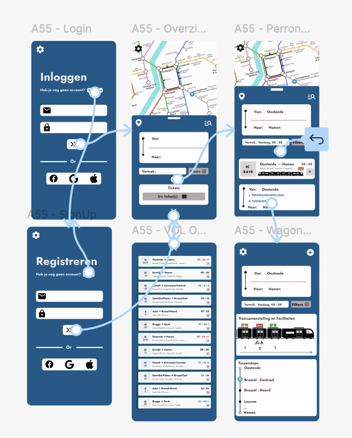

Week 11
Deze week ben ik begonnen met het toevoegen van interactieve elementen aan mijn Figma-prototype. Ik ben nog volop aan het onderzoeken hoe alle interactiefuncties precies werken. Ik vind het interessant om te zien hoe mijn schermen langzaam veranderen in een prototype dat echt reageert.
De eerste interactieve knoppen zijn inmiddels toegevoegd, waardoor een mogelijke gebruiker zich al beperkt kan navigeren binnen de applicatie, zoals van het inlogscherm naar de verschillende infoschermen.
